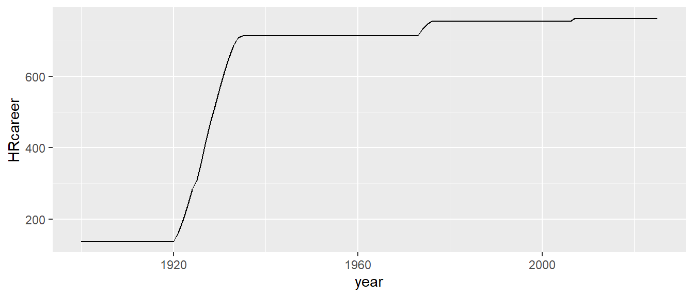
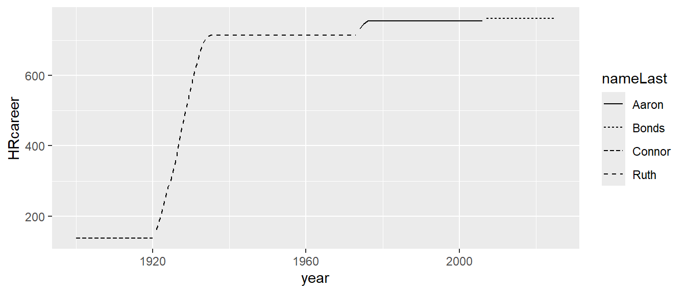
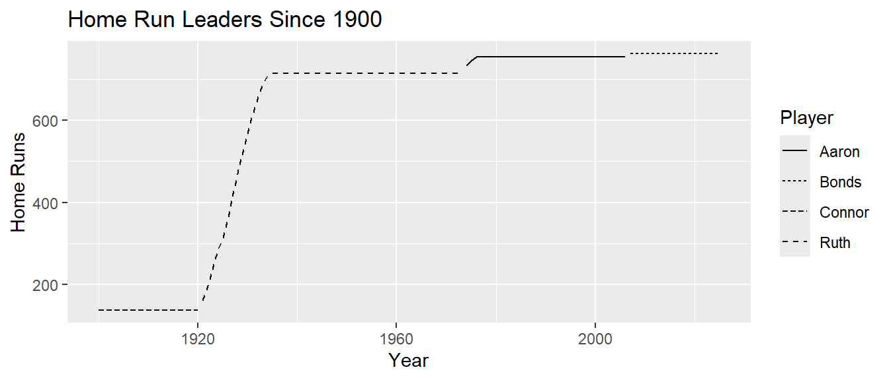
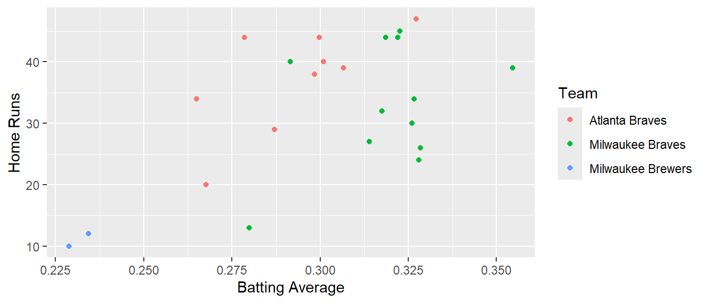

library(Lahman)
library(tidyverse)
library(knitr)MA388 Sabermetrics: Lesson 4
Introduction to R Graphics - Part I
Henry (“Hank”) Aaron (1934-2021)

Review
Key Concepts
five tidyverse verbs
relational databases
split, apply, combine
Review Question
- Using the
Battingdata frame, determine who held the home run record by season from 1900 to the present. In other words, produce a table with one row per season indicating who the current career home run leader was in baseball at that time. Add their full name to the table using thePeopledata frame.
Here is one approach:
Add a column to the
Battingdata frame indicating each player’s cumulative home runs (hint:cumsum()) at the end of the season.Write a function that takes a data frame and a year as arguments and returns the player with the most career home runs that year or earlier.
Map the function over the seasons from 1900 to 2021.
Add player information from the
Peopledata frame.
| year | playerID | HRcareer | yearID | nameFirst | nameLast |
|---|---|---|---|---|---|
| 1900 | connoro01 | 138 | 1897 | Roger | Connor |
| 1901 | connoro01 | 138 | 1897 | Roger | Connor |
| 1902 | connoro01 | 138 | 1897 | Roger | Connor |
| 1903 | connoro01 | 138 | 1897 | Roger | Connor |
| 1904 | connoro01 | 138 | 1897 | Roger | Connor |
| 1905 | connoro01 | 138 | 1897 | Roger | Connor |
| 1906 | connoro01 | 138 | 1897 | Roger | Connor |
| 1907 | connoro01 | 138 | 1897 | Roger | Connor |
| 1908 | connoro01 | 138 | 1897 | Roger | Connor |
| 1909 | connoro01 | 138 | 1897 | Roger | Connor |
| 1910 | connoro01 | 138 | 1897 | Roger | Connor |
| 1911 | connoro01 | 138 | 1897 | Roger | Connor |
| 1912 | connoro01 | 138 | 1897 | Roger | Connor |
| 1913 | connoro01 | 138 | 1897 | Roger | Connor |
| 1914 | connoro01 | 138 | 1897 | Roger | Connor |
| 1915 | connoro01 | 138 | 1897 | Roger | Connor |
| 1916 | connoro01 | 138 | 1897 | Roger | Connor |
| 1917 | connoro01 | 138 | 1897 | Roger | Connor |
| 1918 | connoro01 | 138 | 1897 | Roger | Connor |
| 1919 | connoro01 | 138 | 1897 | Roger | Connor |
| 1920 | connoro01 | 138 | 1897 | Roger | Connor |
| 1921 | ruthba01 | 162 | 1921 | Babe | Ruth |
| 1922 | ruthba01 | 197 | 1922 | Babe | Ruth |
| 1923 | ruthba01 | 238 | 1923 | Babe | Ruth |
| 1924 | ruthba01 | 284 | 1924 | Babe | Ruth |
| 1925 | ruthba01 | 309 | 1925 | Babe | Ruth |
| 1926 | ruthba01 | 356 | 1926 | Babe | Ruth |
| 1927 | ruthba01 | 416 | 1927 | Babe | Ruth |
| 1928 | ruthba01 | 470 | 1928 | Babe | Ruth |
| 1929 | ruthba01 | 516 | 1929 | Babe | Ruth |
| 1930 | ruthba01 | 565 | 1930 | Babe | Ruth |
| 1931 | ruthba01 | 611 | 1931 | Babe | Ruth |
| 1932 | ruthba01 | 652 | 1932 | Babe | Ruth |
| 1933 | ruthba01 | 686 | 1933 | Babe | Ruth |
| 1934 | ruthba01 | 708 | 1934 | Babe | Ruth |
| 1935 | ruthba01 | 714 | 1935 | Babe | Ruth |
| 1936 | ruthba01 | 714 | 1935 | Babe | Ruth |
| 1937 | ruthba01 | 714 | 1935 | Babe | Ruth |
| 1938 | ruthba01 | 714 | 1935 | Babe | Ruth |
| 1939 | ruthba01 | 714 | 1935 | Babe | Ruth |
| 1940 | ruthba01 | 714 | 1935 | Babe | Ruth |
| 1941 | ruthba01 | 714 | 1935 | Babe | Ruth |
| 1942 | ruthba01 | 714 | 1935 | Babe | Ruth |
| 1943 | ruthba01 | 714 | 1935 | Babe | Ruth |
| 1944 | ruthba01 | 714 | 1935 | Babe | Ruth |
| 1945 | ruthba01 | 714 | 1935 | Babe | Ruth |
| 1946 | ruthba01 | 714 | 1935 | Babe | Ruth |
| 1947 | ruthba01 | 714 | 1935 | Babe | Ruth |
| 1948 | ruthba01 | 714 | 1935 | Babe | Ruth |
| 1949 | ruthba01 | 714 | 1935 | Babe | Ruth |
| 1950 | ruthba01 | 714 | 1935 | Babe | Ruth |
| 1951 | ruthba01 | 714 | 1935 | Babe | Ruth |
| 1952 | ruthba01 | 714 | 1935 | Babe | Ruth |
| 1953 | ruthba01 | 714 | 1935 | Babe | Ruth |
| 1954 | ruthba01 | 714 | 1935 | Babe | Ruth |
| 1955 | ruthba01 | 714 | 1935 | Babe | Ruth |
| 1956 | ruthba01 | 714 | 1935 | Babe | Ruth |
| 1957 | ruthba01 | 714 | 1935 | Babe | Ruth |
| 1958 | ruthba01 | 714 | 1935 | Babe | Ruth |
| 1959 | ruthba01 | 714 | 1935 | Babe | Ruth |
| 1960 | ruthba01 | 714 | 1935 | Babe | Ruth |
| 1961 | ruthba01 | 714 | 1935 | Babe | Ruth |
| 1962 | ruthba01 | 714 | 1935 | Babe | Ruth |
| 1963 | ruthba01 | 714 | 1935 | Babe | Ruth |
| 1964 | ruthba01 | 714 | 1935 | Babe | Ruth |
| 1965 | ruthba01 | 714 | 1935 | Babe | Ruth |
| 1966 | ruthba01 | 714 | 1935 | Babe | Ruth |
| 1967 | ruthba01 | 714 | 1935 | Babe | Ruth |
| 1968 | ruthba01 | 714 | 1935 | Babe | Ruth |
| 1969 | ruthba01 | 714 | 1935 | Babe | Ruth |
| 1970 | ruthba01 | 714 | 1935 | Babe | Ruth |
| 1971 | ruthba01 | 714 | 1935 | Babe | Ruth |
| 1972 | ruthba01 | 714 | 1935 | Babe | Ruth |
| 1973 | ruthba01 | 714 | 1935 | Babe | Ruth |
| 1974 | aaronha01 | 733 | 1974 | Hank | Aaron |
| 1975 | aaronha01 | 745 | 1975 | Hank | Aaron |
| 1976 | aaronha01 | 755 | 1976 | Hank | Aaron |
| 1977 | aaronha01 | 755 | 1976 | Hank | Aaron |
| 1978 | aaronha01 | 755 | 1976 | Hank | Aaron |
| 1979 | aaronha01 | 755 | 1976 | Hank | Aaron |
| 1980 | aaronha01 | 755 | 1976 | Hank | Aaron |
| 1981 | aaronha01 | 755 | 1976 | Hank | Aaron |
| 1982 | aaronha01 | 755 | 1976 | Hank | Aaron |
| 1983 | aaronha01 | 755 | 1976 | Hank | Aaron |
| 1984 | aaronha01 | 755 | 1976 | Hank | Aaron |
| 1985 | aaronha01 | 755 | 1976 | Hank | Aaron |
| 1986 | aaronha01 | 755 | 1976 | Hank | Aaron |
| 1987 | aaronha01 | 755 | 1976 | Hank | Aaron |
| 1988 | aaronha01 | 755 | 1976 | Hank | Aaron |
| 1989 | aaronha01 | 755 | 1976 | Hank | Aaron |
| 1990 | aaronha01 | 755 | 1976 | Hank | Aaron |
| 1991 | aaronha01 | 755 | 1976 | Hank | Aaron |
| 1992 | aaronha01 | 755 | 1976 | Hank | Aaron |
| 1993 | aaronha01 | 755 | 1976 | Hank | Aaron |
| 1994 | aaronha01 | 755 | 1976 | Hank | Aaron |
| 1995 | aaronha01 | 755 | 1976 | Hank | Aaron |
| 1996 | aaronha01 | 755 | 1976 | Hank | Aaron |
| 1997 | aaronha01 | 755 | 1976 | Hank | Aaron |
| 1998 | aaronha01 | 755 | 1976 | Hank | Aaron |
| 1999 | aaronha01 | 755 | 1976 | Hank | Aaron |
| 2000 | aaronha01 | 755 | 1976 | Hank | Aaron |
| 2001 | aaronha01 | 755 | 1976 | Hank | Aaron |
| 2002 | aaronha01 | 755 | 1976 | Hank | Aaron |
| 2003 | aaronha01 | 755 | 1976 | Hank | Aaron |
| 2004 | aaronha01 | 755 | 1976 | Hank | Aaron |
| 2005 | aaronha01 | 755 | 1976 | Hank | Aaron |
| 2006 | aaronha01 | 755 | 1976 | Hank | Aaron |
| 2007 | bondsba01 | 762 | 2007 | Barry | Bonds |
| 2008 | bondsba01 | 762 | 2007 | Barry | Bonds |
| 2009 | bondsba01 | 762 | 2007 | Barry | Bonds |
| 2010 | bondsba01 | 762 | 2007 | Barry | Bonds |
| 2011 | bondsba01 | 762 | 2007 | Barry | Bonds |
| 2012 | bondsba01 | 762 | 2007 | Barry | Bonds |
| 2013 | bondsba01 | 762 | 2007 | Barry | Bonds |
| 2014 | bondsba01 | 762 | 2007 | Barry | Bonds |
| 2015 | bondsba01 | 762 | 2007 | Barry | Bonds |
| 2016 | bondsba01 | 762 | 2007 | Barry | Bonds |
| 2017 | bondsba01 | 762 | 2007 | Barry | Bonds |
| 2018 | bondsba01 | 762 | 2007 | Barry | Bonds |
| 2019 | bondsba01 | 762 | 2007 | Barry | Bonds |
| 2020 | bondsba01 | 762 | 2007 | Barry | Bonds |
| 2021 | bondsba01 | 762 | 2007 | Barry | Bonds |
| 2022 | bondsba01 | 762 | 2007 | Barry | Bonds |
Plotting using ggplot
In this course, we will use ggplot for graphics. While the code initially seems more complex, ggplot allows us to easily add variables to plots using aesthetics. Here are a few aesthetics ggplot makes available:
color
fill
linetype
linewidth
shape
Long vs. Wide Format
With ggplot, you will typically want data in long format as opposed to wide format. What’s the difference?
# Here are Hank Aaron's and Carl Yastrzemski's HR totals for 1965-70.
data_long <- Batting |>
filter(yearID >= 1965,
yearID <= 1970,
playerID %in% c("aaronha01","yastrca01")) |>
select(yearID, playerID, HR)
# This data is in long format.
data_long |> kable()| yearID | playerID | HR |
|---|---|---|
| 1965 | aaronha01 | 32 |
| 1966 | aaronha01 | 44 |
| 1967 | aaronha01 | 39 |
| 1968 | aaronha01 | 29 |
| 1969 | aaronha01 | 44 |
| 1970 | aaronha01 | 38 |
| 1965 | yastrca01 | 20 |
| 1966 | yastrca01 | 16 |
| 1967 | yastrca01 | 44 |
| 1968 | yastrca01 | 23 |
| 1969 | yastrca01 | 40 |
| 1970 | yastrca01 | 40 |
data_wide <- data_long |>
pivot_wider(id_cols = playerID, names_from = yearID, values_from = HR)
# This data is in wide format.
data_wide |> kable()| playerID | 1965 | 1966 | 1967 | 1968 | 1969 | 1970 |
|---|---|---|---|---|---|---|
| aaronha01 | 32 | 44 | 39 | 29 | 44 | 38 |
| yastrca01 | 20 | 16 | 44 | 23 | 40 | 40 |
A basic ggplot has the data frame, aesthetic, and at least one layer. Going back to the Review, let’s plot the number of home runs for the career home run leader by year.
leaders |>
ggplot(aes(x = year,
y = HRcareer)) +
geom_line()
Now, let’s add the player’s name to the plot:
leaders |>
ggplot(aes(x = year,
y = HRcareer,
linetype = nameLast)) +
geom_line()
Next, let’s change the labels:
leaders |>
ggplot(aes(x = as.numeric(year),
y = HRcareer,
linetype = nameLast)) +
geom_line() +
labs(title = "Home Run Leaders Since 1900",
x = "Year",
y = "Home Runs",
linetype = "Player")
Your Turn
Using the Batting data frame, plot a scatter plot of Hank Aaron’s home runs (\(y\)-axis) vs. batting average (\(x\)-axis) by season. Color the points in the plot by team name. Change the labels to “Home Runs”, “Batting Average”, and “Team”.
